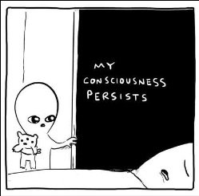

We want it. We need it. More, better, longer. Wannnnnt sleeeeep.
Everybody knows how important sleep is. Every body, every mom, every doctor, every scientist.
Like breath, it is absolutely required.
And yet…
Somehow, unlike breath, a whole lot of people don’t meet the sleep "requirement."
Lots and lots are getting only a few hours a night, staring at the ceiling till dawn, waking in the middle of the night and staying there. For some folks, we’re talking years, decades, lifetimes.
Insomnia is a common occurrence.
It’s a problem.
I mean, of course.
So naturally, gotta-fix-it humans try to force 8 hours and take pills and meditate and avoid caffeine and blue light and stick to a bedtime schedule.
And still night after night, sleep gives zillions of people the raspberry.
And also still night after night, for most folks, life, and the body, carry on, regardless.
Which surely contradicts the standard narrative.
I mean, that’s a pretty feeble and optional “necessity” considering how often it’s not there.
In fact, often there aren’t even consequences, other than “don’t like” and “but surely LATER will be awful…”
And since reams have also been written about whether consciousness and/or awareness continue when we’re in deep sleep, there's no need for The Mind-Tickler to regale you with that stuff now.
Although many of those what-is-consciousness-during-deep-sleep conversations may be just the ticket needed to actually help folks finally drop off to sleep.
But I digress.
The thing is, where does the sleep-is-obligatory religion leave all those many people who aren’t able to force repose to bend to their will?
Up a creek with a "See, there's something wrong with me," paddle?
Or, could it be slumber is not actually the requirement we’ve been led to believe?
Could it be sleeplessness is even a gift, not a curse? Particularly for those claiming a desire to “wake up" (whatever that is?)
After all, so many mystics over the centuries deliberately skipped sleep, on purpose, in order to transcend. And who knows how many modern-day struck-by-lightening gurus have been or are poor sleepers.
So perhaps we can think outside the, “MUST SLEEP!” box for just a moment.
Because without much shut-eye, we might start functioning from a whole different viewpoint than from the usually-preferred sharpness of self.
We might begin to enjoy the ego not being on its usual alert, well-rested, and spritely game.
We might come to recognize and enjoy the gone, the out of it, the not-here, me.
Rather than thinking it is a bad thing.
Because for all we know, the crappy, spaced-out feeling that comes with “not enough” sleep is perhaps even necessary to wake up in a different way.
That when the mind gets busy and occupied with how the body feels, access through a back door to something different can become possible.
Unobstructed by the well rested self, tiredness may allow a different state of consciousness to enter.
A form of transcendence.
As the mystics of yore knew.
Waking up may be easier if we don’t go to sleep.
Now of course no one is saying, “You mustn’t sleep.”
By all means, if sleep can happen, yay! Who wouldn’t love that?
But if insomnia comes along night after night anyway, regardless of preference…
Perhaps, rather than assume it means we are messed up and doomed,
we might enjoy it a little.
Because there are gifts in being awake literally, while seeking to be awake metaphorically.
And because being out of it
May just be where we’ve actually wanted to be
All along.
to get your Mind-Tickled every week.
Click here to see Judy on Buddha at the Gas Pump.
Watch Judy and Robert Saltzman chat here.
"Everyone sleeps, except lovers, who stay awake, telling stories to God."
--Rumi
